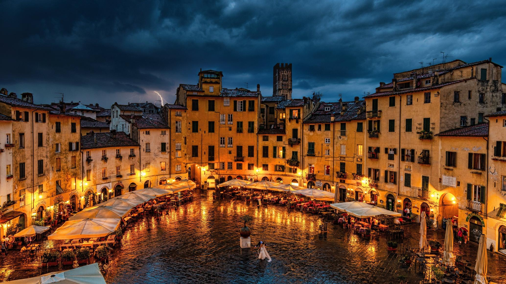
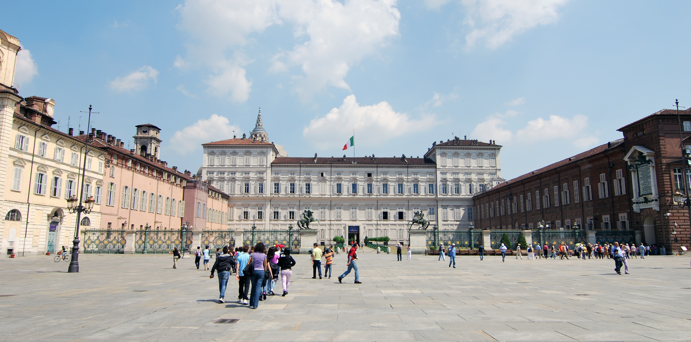

.jpg?width=800)
📸 Viagem em imagens e gráficos
Fotografias dos destinos, percurso da viagem e evolução do grupo. A foto da Costa Amalfitana representa a etapa costeira, não a vila de Camerota.
.jpg?width=800)

.jpg?width=800)

🧭 Rota da viagem
✈️
Brasil25/12
→
🏛️
Florença26/12
→
⛪
Milão30/12
→
🏟️
Roma03/01
→
🌊
Camerota07/01
→
🍕
Nápoles08/01
→
✈️
Milão09/01
👨👩👧👦 Participantes por etapa
📍 Lugares que vamos conhecer
Galeria de atrações com fotografias reais do Wikimedia Commons nas atrações identificadas e ilustrações nos demais locais. Créditos e licenças estão vinculados às fontes.
.jpg?width=640)
.jpg?width=640)


🏰28/12
Piazza dell’Anfiteatro
 🗿
🗿29/12
David de Michelangelo
.jpg?width=640)

🏛️02/01
Piazza Castello
.jpg?width=640)

 🏘️
🏘️.jpg?width=640)
 🍕
🍕🌿 Camerota: nossas origens
Em 7 de janeiro de 2027, a viagem ganha um significado especial: conhecer a região de onde vieram os antepassados da família Sansevero. A visita ao antigo povoado de Camerota é diferente do pernoite em Marina di Camerota, a localidade costeira.
🏰 Camerota, o vilarejo histórico
Castelo de Camerota · imagem do artigo “Il borgo medievale di Camerota”, Villamirella ↗.
Situado no Cilento, na província de Salerno, o antigo povoado conserva referências medievais. O artigo da Villamirella destaca o Castello di Camerota e as igrejas de San Nicola, San Francesco e Santa Maria delle Grazie.
Os locais são sugestões de visita, sujeitos a horários, acessibilidade e condições do dia.
🌊 Marina di Camerota, junto ao mar

Depois da visita ao povoado histórico, a programação segue para Marina di Camerota, com hospedagem na La casa di Filomena, Via Nazario Sauro 15.
Fotografia aérea de Marina di Camerota enviada pela família.
⛪ Santa Maria delle Grazie — a igreja do batismo de Alfonso
No centro histórico de Camerota, a igreja de Santa Maria delle Grazie é identificada no registro familiar como o local do batismo de Alfonso Sansiviero, em 20 de agosto de 1868. É uma parada especialmente significativa para a visita de 7 de janeiro.
Ver fotos e informações da igreja em Camerota ↗
A fotografia exibida acima é do Castello Marchesale de Camerota, não da igreja. A imagem de Santa Maria delle Grazie em Lentiscosa é de outro edifício e não foi utilizada.
📜 Um capítulo da história da família
A passagem por Camerota é uma oportunidade de revisitar as origens da família, associadas ao antepassado Alfonso Sansiviero. A relação familiar vem dos documentos e relatos da família, não do artigo turístico da Villamirella.
Para o passeio, vale priorizar o centro histórico, pausas em locais planos e tempo para fotografias e conversas. O trajeto entre Nápoles, Camerota e Marina di Camerota deve ser planejado considerando o grupo de 11 pessoas e o transporte complementar ainda pendente.
🗺️ Atrações prioritárias · roteiro de Lucas
De 31/12 a 06/01, as atrações, os horários detalhados, a sequência de visitas e os passeios do PDF de Lucas são a programação prioritária do calendário familiar. Horários de atrações são planejados e dependem de ingressos, abertura e acessibilidade; reservas confirmadas de trens, voos e hotéis prevalecem sobre os horários de transporte estimados no PDF. Em 07/01, mantém-se o deslocamento confirmado via Nápoles para Camerota.
🏛️ Milão · 31/12
Última Ceia (ingresso a confirmar), Castello Sforzesco, Parco Sempione, Arco della Pace e Réveillon na região do Duomo.
- Mercado opcional
- Preparação para o almoço
- Almoço
- Saída para a Última Ceia; chegar 30 minutos antes das 15h
- Visita guiada à Última Ceia (ingresso a confirmar)
- Castello Sforzesco, Parco Sempione e Arco della Pace
- Retorno ao hotel e descanso
- Jantar livre, Galleria Vittorio Emanuele II e opção All’Antico Vinaio
- Réveillon na região do Duomo
🍹 Milão · 01/01
Brera, Piazza del Carmine, Piazza San Marco e aperitivo nos Navigli, como opção para quem preferir passear no feriado.
- Descanso e café no hotel
- Saída para Brera
- Almoço em Brera
- Piazza del Carmine, Piazza San Marco, lojas, cafés e região da Pinacoteca
- Deslocamento até Navigli
- Aperitivo / happy hour
- Retorno ao hotel e descanso
👑 Turim · 02/01
Via Roma, Piazza San Carlo, Musei Reali/Palazzo Reale (ingressos para todo o grupo às 13h) e Catedral; adaptar aos trens confirmados e ao aniversário do Miguel.
- Preparação e café (grupo de Lucas)
- Frecciarossa confirmado: Glaucio, Nanda, Malu e Miguel
- Chegada à estação, grupo de Lucas (previsto)
- Italo para Turim, grupo de Lucas (horário da reserva exibida)
- Encontro dos grupos; Via Roma até Piazza San Carlo
- Almoço
- Palazzo Reale / Musei Reali
- Catedral de Turim
- Grupo de Lucas na estação
- Italo de Lucas para Milão (horário da reserva exibida)
- Frecciarossa confirmado: retorno do grupo de quatro
- Jantar livre; aniversário de Miguel
🍕 Roma · 03–04/01
Fontana di Trevi, Panteão, restaurante Mariuccia, Monumento Vittorio Emanuele II, Igreja de Santo Inácio e Osteria da Fortunata. Restaurantes sem reserva confirmada.
- Café, malas e preparação do check-out
- Passeio e almoço livres; check-out até 12h
- Frecciarossa 9631 confirmado Milão → Roma (substitui trem sugerido por Lucas)
- Check-in Gioberti Art Hotel (estimativa)
- Fontana di Trevi, Panteão e Mariuccia (reserva pendente)
- Outlet, museus ou cidade; Vittoriano e terraço panorâmico
- Retorno ao hotel
- Igreja de Santo Inácio de Loyola
- Osteria da Fortunata (reserva pendente)
🎨 Vaticano · 05/01
Museus Vaticanos, Capela Sistina, Escola de Atenas e Basílica de São Pedro; ingressos e acessibilidade a verificar.
- Acordar, café e preparação
- Deslocamento para os Museus Vaticanos
- Museus Vaticanos: Capela Sistina e Escola de Atenas
- Almoço livre
- Basílica de São Pedro; verificar regras de entrada e filas
- Retorno ao hotel
- Jantar livre
🏟️ Roma · 06/01
Coliseu, Fórum Romano conforme tempo disponível, Via del Corso e Piazza di Spagna; considerar o feriado da Epifania.
- Acordar, café e preparação
- Deslocamento até o Coliseu
- Visita ao Coliseu
- Almoço
- Via del Corso: lojas e compras
- Piazza di Spagna
- Passeio e jantar livre
- Volta ao hotel e malas
Fonte principal das atrações: “Roteiro de Viagem: Milão + Turim + Roma”, preparado por Lucas, páginas 2–8. Os horários de visita são planos, não confirmações de ingresso ou reserva.
📅 Calendário completo
Toque numa data ou fotografia para consultar o programa do dia. As imagens ilustram os destinos e nem sempre retratam a atração exata daquele dia.
✈️ Voos da família
Todos os horários são locais. Os seis voos de Glaucio, Malu e Miguel foram conferidos com o bilhete; LATAM e TAP seguem os dados registrados no roteiro e devem ser reconfirmados.
Conexão de 26/12: chegada a Milão Linate às 13h55 e trem saindo de Milano Centrale às 18h09. Nanda chega a Malpensa (MXP, Terminal 1) às 09h25, conforme programação estimada enviada; os demais chegam a Linate (LIN) às 13h55.
🚄 Trens
| Data | Trecho | Horário | Situação |
|---|
🎟️ Dois grupos de trens para Turim
2 de janeiro de 2027: o grupo de Glaucio, Nanda, Malu e Miguel viaja de Frecciarossa, com quatro bilhetes confirmados. O grupo de Lucas viaja separadamente, com horários Italo informados no PDF e ainda não conferidos em bilhetes.
| Grupo | Ida · Milão → Turim | Volta · Turim → Milão | Situação |
|---|---|---|---|
| Glaucio, Nanda, Malu e Miguel | Frecciarossa 9600 · 07h54–09h00 | Frecciarossa 9567 · 19h00–20h01 | Confirmado |
| Grupo de Lucas | Italo · 09h29–10h30 (estimado) | Italo · 18h30–19h31 (estimado) | Horários exibidos no aplicativo |
Encontro sugerido em Turim após 10h30, condicionado à chegada do segundo grupo.
Assentos confirmados · grupo de quatro
Vagão 9, classe Standard.
| Passageiro | Ida · FR 9600 | Volta · FR 9567 |
|---|---|---|
| Glaucio | 10C | 4C |
| Nanda | 9D | 3D |
| Malu | 10D | 4D |
| Miguel | 9C | 3C |
Tarifa Super Economy; sem alteração ou reembolso. Os códigos de reserva e QR codes não são publicados.
🏨 Hospedagens
🚗 Sul da Itália
Retirada em Nápoles
Ecovia, Audi A3 Sportback ou similar, automático, 5 lugares.
10h00, Napoli Centrale / Piazza Garibaldi.
Devolução em Nápoles
Até 18h00, Parking P4, Corso Meridionale 60/62.
Percurso pela Costa Amalfitana condicionado ao tempo e trânsito.
Transporte complementar
O grupo terá 11 pessoas, mas apenas um carro de cinco lugares está reservado. É necessário definir transporte adicional e espaço para bagagens.
👨👩👧👦 Família
Primeiro grupo
Glaucio, Nanda (Maria Fernanda), Malu (Maria Sansevero) e Miguel.
4 pessoasGrupo que chega em 30/12
Joaquim, Hilda, Perla, Gabriel, Lucas, Giovanni, Marina, Pedro e Arthur.
9 pessoasAlterações
Nanda retorna em 03/01. Lucas se separa em 07/01.
13 pessoas até 02/01; 12 até 06/01; 11 a partir de 07/01.
🎂 Aniversários
02/01: Miguel completa 16 anos, com passeio a Turim.
06/01: Pedro completa 22 anos, em Roma.
Prever pausas e trajetos confortáveis para os familiares mais velhos.
✅ Pendências de reservas
As marcações ficam apenas no navegador utilizado.